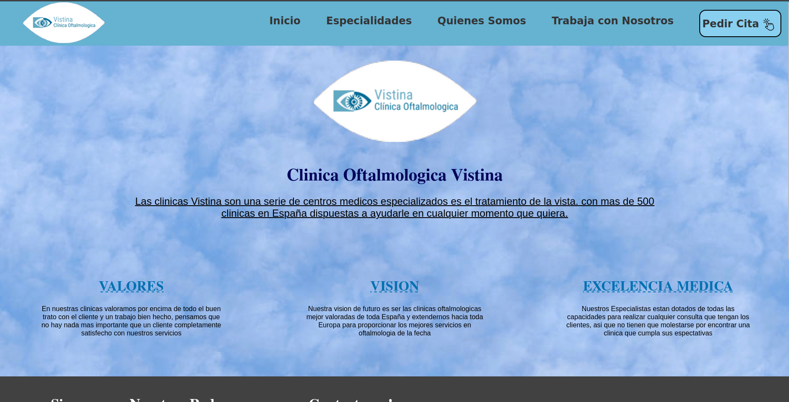
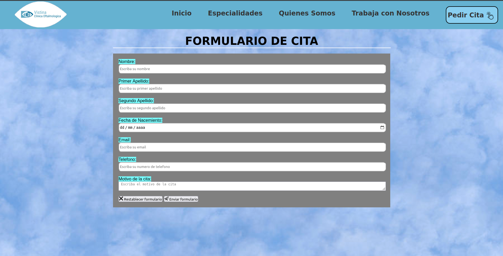
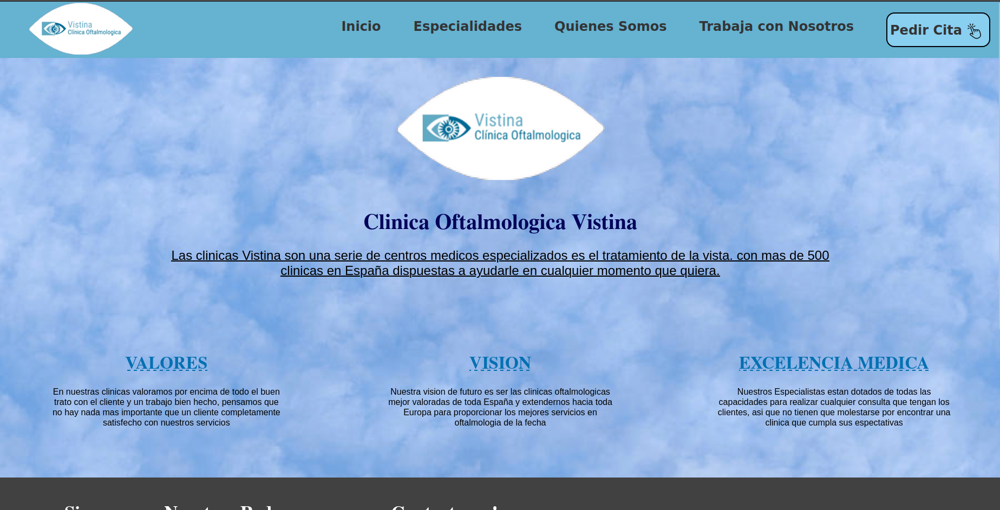
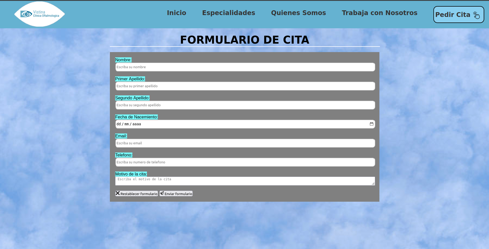
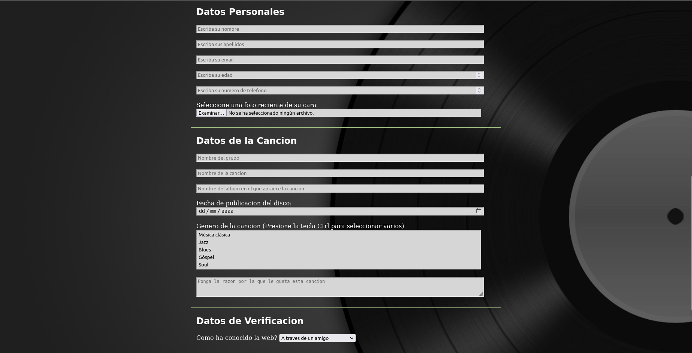
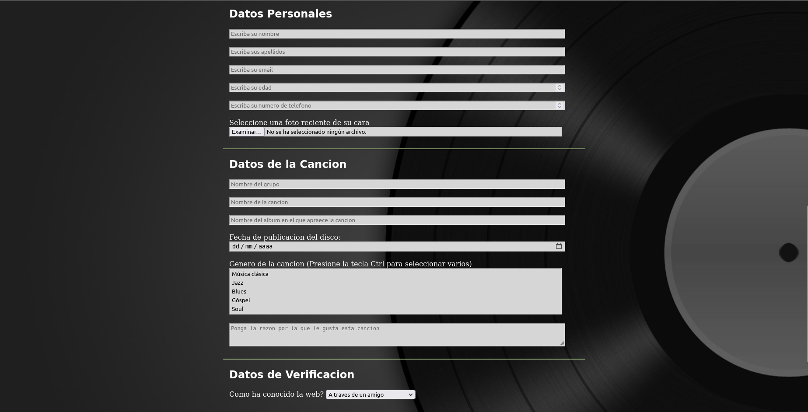

Erik Sebastian
Moldovan Pal
Front End Developer
Hola, soy Erik!
Soy estudiante de diseño web de 18 años nacido en Madrid con experiencia en HTML, CSS y JavaScript
buscando trabajo en el sector.
Descubrí mi pasión por el diseño web despues de utilizar HTML por primera
vez en la clase optativa de informatica
de bachillerato de ciencias sociales y desde ese momento supe que me queria centrar en esta rama de
la
informatica.
Soy muy creativo, perfeccionista, y lo mas importante es que me apasiona el diseño.
Algunas de mis aficiones son las series y peliculas, videojuegos, dar paseos o la lectura.

Tengo conocimientos en:


Algunos de mis proyectos son:

Pagina de Camisetas
Este proyecto consistió en hacer una pagina web para una tienda online de personalizacion de
camisetas. Tuve que hacer 2 sketches a lapiz y papel y elegir uno de los diseños, realizar
el wireframe del diseño y realizar un prototipo de la pagina.
 



Pagina de Clinica
Oftalmologica
Este proyecto consistió en hacer una pagina web para una clinica a nuestra eleccion e ir
añadiendo secciones como "Sobre nosotros", "Nuestros servicios", etc...


Dibujo con SVG
El objetivo de esta practica era hacer un dibujo a nuestra eleccion utilizando CSS, las
formas SVG y la etiqueta position con z-index
 

Blog de Musica
El objetivo de esta practica era utilizar el colspan y rowspan en la tabla y hacer un
formualrio de tres secciones donde se solicitara la informacion del cliente